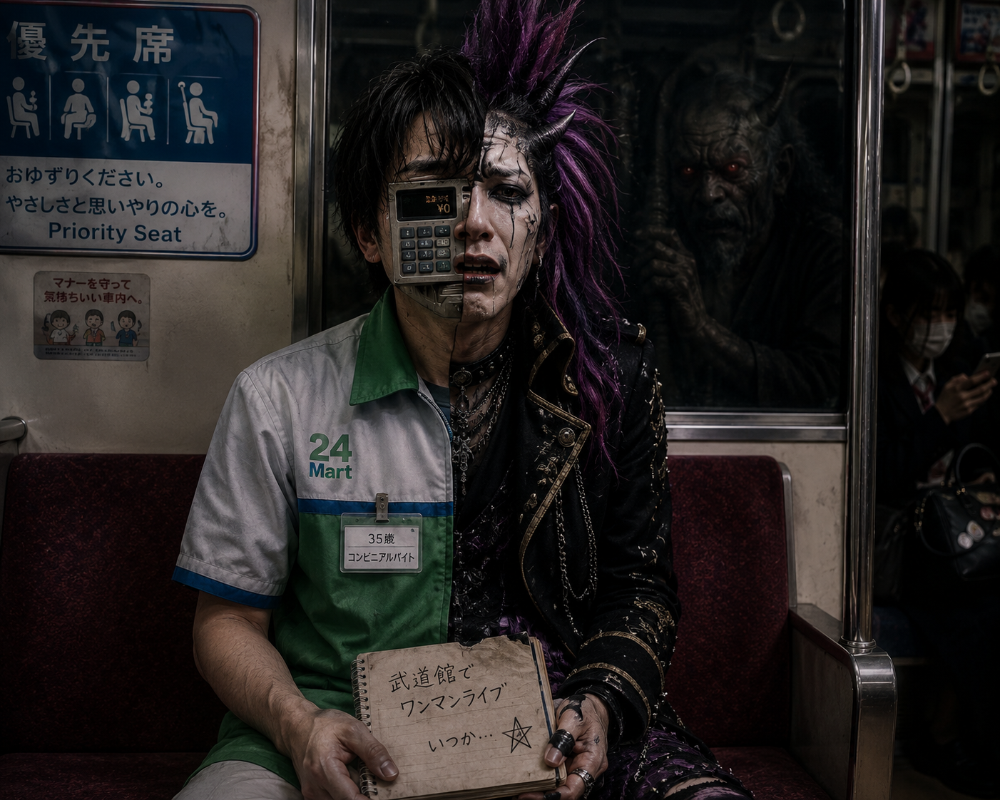
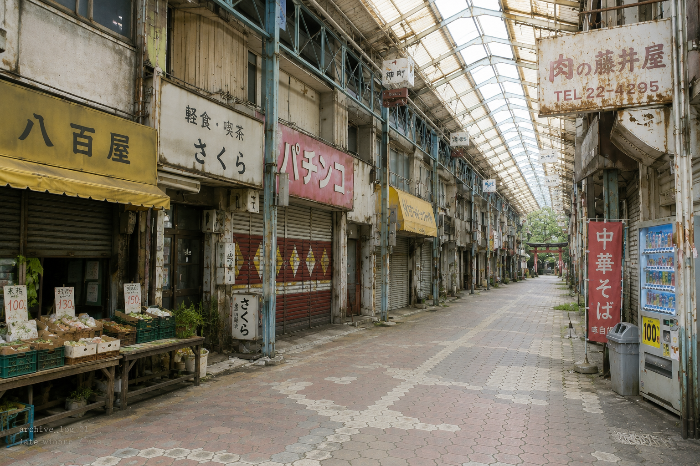

true_archive_log_00
access granted / not for display
This is not the entrance.
This is not the exit.
The archive was never hidden.
It was only misplaced.
preserved_origin_01
initial arcade / before descent

preserved_entity_01
removed from underground / still breathing

phase_error_01
same room / different witness
off_record_01
after shooting / no symbolic duty
return